Generating random quantum states with Quantis
In this tutorial we show how the Quantis random number generator can be used within Mathematica to generate random quantum states. We use MathLink, a standard interface for interprogram communication provided by Mathematica. We assume that the reader has the basic knowledge of GNU/Linux system and programming in C language.
Introduction
Quantis is a hardware random number generator, developed by ID Quantique, that works using elementary quantum optics. It is available in three versions: as a USB device, as a PCI and as a PCI express card. For more details see product overview page. For the purpose of this tutorial we will use a USB version of the device.
Using MathLink
MathLink is a Mathematica standard for interprogram communication. It allows external programs to be called from Mathematica and vice versa. For the purpose of this tutorial we have developed a small MathLink program using libQuantis. This library is provided by ID Quantique for accessing Quantis true random number generator.
The following instructions assume that one has a working Mathematica installation. One should also take care of installing drivers required to communicate with Quantis device. More information about the driver installation procedure can be found in Installation & User guide at the ID Quantique web page.
Communication with a device
ID Quantique provides drivers and a library for accessing Quantis devices on the most popular operating systems. The software package for using Quantis, including some examples of how libQuantis library can be used, is available from ID Quantique support page.
In order to use libQuantis library within Mathematica one needs to make sure that libQuantis installation directory is included in the loader search path. For example, assuming that libQuantis.so was installed in /usr/local/IDQ/Quantis/lib, on a typical GNU/Linux installation one should add this directory to /etc/ld.so.conf file or some file included by this file.
Compilation of source files
MathLink source files usually have .tm extension. They are compiled using mcc tool, which accepts most options accepted by the GNU C compiler. In order to compile MathLink source file one has to execute the following command
mcc quantis_random_real.tm -o quantis_random_real -I/usr/local/IDQ/Quantis/include -L/usr/local/IDQ/Quantis/lib -lQuantis
We assume that header files are installed in /usr/local/IDQ/Quantis/include and libraries in /usr/local/IDQ/Quantis/lib.
For example, the function for reading a random real number within the range [0,1] can be implemented in C programming language as
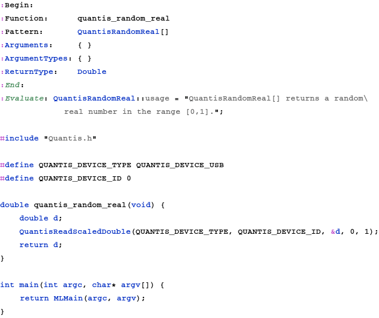
Macrodefinitions QUANTIS_DEVICE _TYPE and QUANTIS_DEVICE _ID define the type and the id of the used Quantis device. In this case we are using USB device number 0.
In what follows we assume that the above source code was saved in $HOME/Quantis/quantis_random_real.tm file and that the resulting file quantis_random_real was saved in $HOME/Quantis directory.
Note that even without a Quantis device installed you can compile and test the following code by linking it against libQuantis-NoHw library
mcc quantis_random_real.tm -o quantis_random_real -I/usr/local/IDQ/Quantis/include -L/usr/local/IDQ/Quantis/lib -lQuantis-NoHw
Installation of external procedures
After a successsful compilation of the above source code, the resulting function can be installed within Mathematica using the Install built-in function.
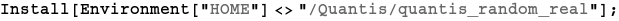
Assuming that everything goes as expected, it should be now possible to read a random real number generated by Quantis device.
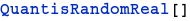
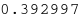
Generating random quantum states
The problem of generating random quantum states (density matrices) is of a great interest from the quantum information theory point of view. In this tutorial we use only one method and we generate density matrices from the Hilbert-Schmidt ensamble. The description of other methods for generating random density matrices can be found in the recent preprint by K. Zyczkowski, K. A. Penson, I. Nechita and B. Collins, Generating random density matrices, arXiv:1010:3570 (2010).
Each metric on the space of quantum states can be used to define a probability measure. Here we use the Hilbert-Schmidt metric, which is commonly used to describe a metric structure of the set of quantum states. In particular, it introduces Euclidean geometry in the space of density matrices. In the special case of one-qubit density matrices, the space has the form of Bloch ball.
In order to generate a random density matrix, we need to generate a Ginebre matrix, which is defined as m×n complex matrix with elemens having real and imaginary parts distributed independently with N[0,1].
As libQuantis provides us with uniform samples only, one needs to take care of obtaining the required distribution from this sample. To achieve this we use a standard method of inverting the cumulative distribution function.
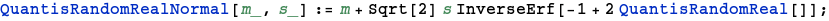
Using this function one can easily obtain a Gaussian sample of 5000 real random numbers
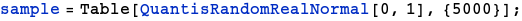
and it is easy to verify that the numbers are indeed distributed according to the normal distribution.
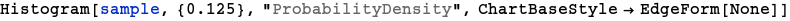
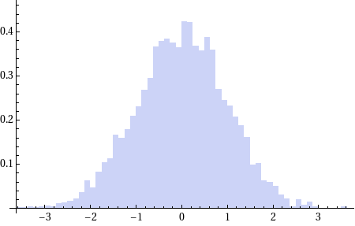
Using QuantisRandomRealNormal function we can now define a function for generating Ginibre matrix as
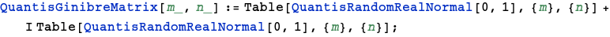
The function for generating a random density matrix distributed uniformly with respect to probability mesure induced by Hilbert-Schmidt metric reads
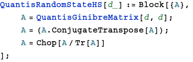
One can easily check that the resulting objects are indeed density matrices.
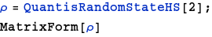
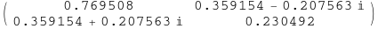
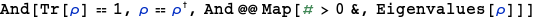
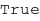
Final remarks
We have shown how Quantis true random number generator can be used along Mathematica to generate random density matrices. Random quantum states can be used to test various proprietis of the space of quantum states and the described method relies on a very good source of randomness.